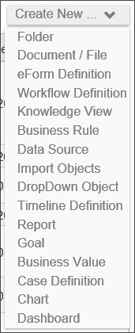
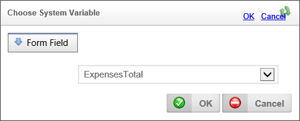

As mentioned previously, in the BP Logix Getting Started Sample Project, there is a Business Rule called Is Finance Approval Needed? The condition this rule evaluates is whether the total amount of the expense request is greater than $1,000. Based on this evaluation, the rule returns a "Yes" or "No" answer. If the answer is "Yes", the Process Timeline will send the request to the Finance department to approve the amount.
Let’s create the new business rule by navigating to the root level of the My Project folder, and selecting “Business Rule” from the Create New… dropdown that is located on the upper right of the Process Director screen to open the business rule definition screen.

Figure 107: Create New Dropdown
This will open the business rule definition screen, showing only the Business Rule's Name textbox. Name the business rule “Requires finance approval?”, and click the OK button to open the configuration screen.
On the Properties tab, Type “My Project” in the Group In Value Picker field. Process Director will group together business rules of the same group when you are selecting a business rule from a pick list, making them easy to find and use.
Our business rule is going to use data from the Form we created, so, click the Build button for the Picker control labeled “Form Associated with Business Rule (optional)”. Doing so will open a dialog box from which you can pick your Form, “My Employee Expense Report”. When you pick your Form from the list, the dialog box will automatically close. Now click the Update button on the bottom of the window in order to save that choice.
Now, set the conditions under which the Business Rule will apply to require a member of the Finance Group to approve the expenditure. We want this business rule to return “true” or “false” to the question of whether finance approval is required. So, on the Values tab, set the Returns dropdown to “Result of Condition”.
Click the text link “* true *” to open up the Conditions For dialog box.
This rule is going to evaluate to TRUE if the amount of reimbursement the employee is requesting (represented on the Form by the ExpensesTotal field) is greater than $1,000. So we’ll configure the condition to be evaluated by the rule appropriately. Click the Add Condition button to begin creating the condition. The first conditions row will appear, and the first control in the row (we refer to this as the “left hand side” of the condition) is a Picker control that displays the text, “Name”.
Figure 108: Empty Conditions Row
Click the Picker Control’s Build button to reveal the Choose System Variable dialog box. From here, select Name >> Form >> Form Field. Select “ExpensesTotal” from the [Select Form Field] dropdown. When you’ve done this, click the OK button to return to the Conditions For dialog box.

Figure 109: Business Rule System Variable
The Picker control in the conditions line should now display the text, “ExpensesTotal”. The data type dropdown menu should already display “Number”. Set the Operator dropdown to “>” and type “1000” into the value textbox.

Figure 110: ExpensesTotal Condition
Click the OK button to save your condition and return to the Business Rule definition. The Condition link should now display “ExpensesTotal > 1000”. The value this business rule will return will be “true” if the expenses total is greater than $1,000, and “false” otherwise. Click the Business Rule definition's OK button to save and close the Business Rule.